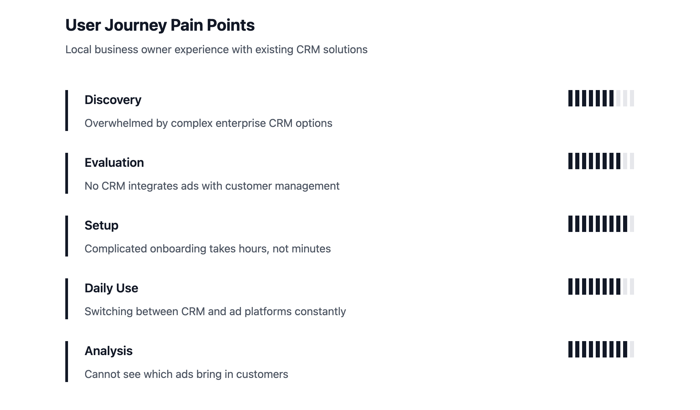
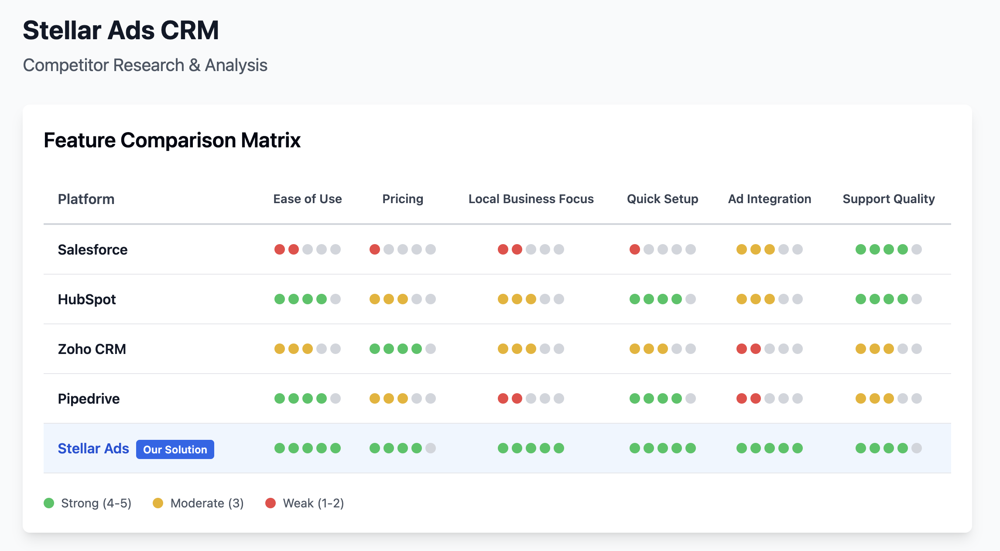
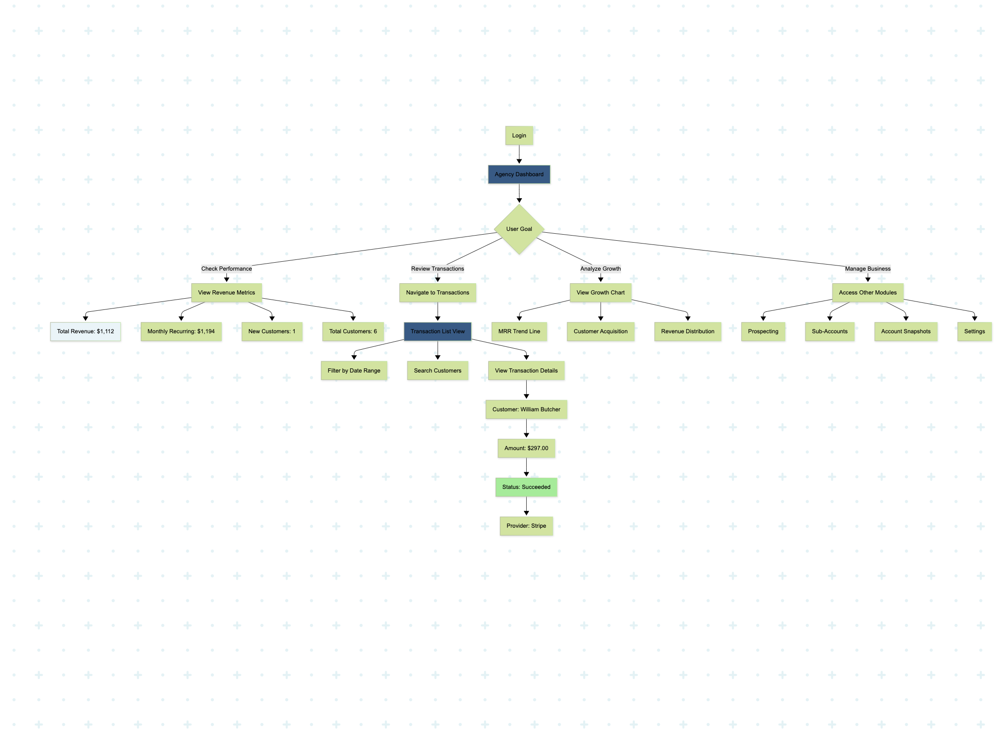
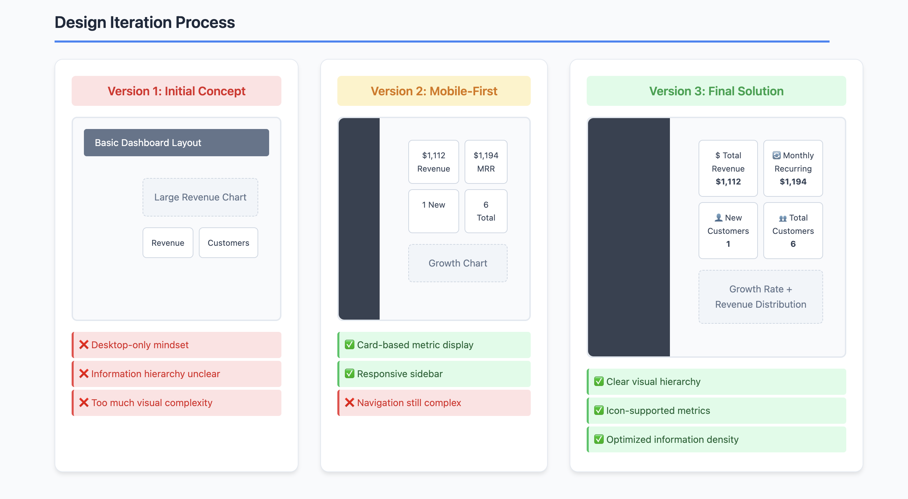

The Problem
Local business owners were running their operations across spreadsheets, sticky notes, and a patchwork of disconnected tools. Booking an appointment and tracking whether that client ever came back required manual effort that owners — who were also the ones cutting hair, training clients, and managing staff — simply didn't have time for.
Existing CRMs weren't built for them. Salesforce costs $150/month and requires a consultant to set up. Square handles booking but stops there. Zoho is generic by design. None of them started from the reality of running a salon or a gym.
The opportunity was clear: build something that earns its place in a busy person's day by solving their most frequent pain point first, and grows with them without requiring a technical background.
Impact
- Booking time dropped from ~20 minutes to under 4 minutes per appointment — timed across 8 beta users on the same workflow before and after
- 12 of 15 beta businesses actively tracking client follow-ups for the first time (previously sporadic or nonexistent)
- 8 of 9 users self-configured custom fields with zero guidance in their first week
- ~2 hours/day estimated time savings, based on pre-launch time-diary interviews
- 4.7/5 average satisfaction across 23 beta businesses
- ~40% increase in repeat booking rate across 6 tracked accounts over 3 months
What I Found in Research
I interviewed 15 local business owners and surveyed 80 more. But the thing that actually changed the product wasn't a survey — it was a Tuesday morning I spent shadowing a salon owner.
She never opened the contacts view. Not once. She worked entirely from her daily schedule: who's coming in, when, what they need. The contact database was something she'd look at later — if at all.
That single observation flipped the information architecture. The booking calendar became the home screen. The contact dashboard got demoted. The product got simpler and more useful at the same time.
Other things that stuck from research:
- 68% of the owners we surveyed were still using spreadsheets for customer management
- Every industry had meaningfully different data needs — salons track color formulas and allergies, gyms track fitness goals and injury history, clinics track prescriptions. A generic field structure wasn't going to work.
- Client retention was the pain point owners mentioned most after booking. They knew lapsed clients were revenue walking out the door, but nothing in their current workflow caught it.
Market Research
Existing solutions gaps:
- Salesforce: Enterprise-focused, $150+/month, requires technical setup
- Square Appointments: Good for booking but limited customer management
- Zoho CRM: Generic by design, no industry customization
Opportunity:
Build something that earns its place in a busy person's day by solving their most frequent pain point first — booking — then grows with them without requiring a technical background.
User Research
Research methods:
- 15 in-depth interviews with local business owners
- Shadowed 5 businesses through full workdays
- Surveyed 80 local business owners
- Prototype testing across 8 different industries
The observation that changed everything:
The salon owner I shadowed never once opened the contacts view. She lived in her daily schedule. That behavioral truth — not any interview insight — flipped the entire IA of the product.

Competitor Analysis
- Salesforce: Powerful but expensive, requires consultants
- HubSpot: Marketing-focused, weak on operations
- Square: Good booking, limited CRM features
- Zoho: Affordable but generic
Key gap:
No CRM prioritizes booking as the core surface. Customization requires developers. Retention tools are afterthoughts. None of them started from the reality of running a local business.

How I Designed It
Booking-first architecture
The calendar is the home screen. One-click scheduling, automated reminders, client history accessible without leaving the booking view. The goal was to make the most common daily task feel effortless.
No-code customization
A drag-and-drop field builder that lets owners add any data point — text, date, dropdown, file upload — and organize fields into sections. Industry templates give them a starting point so they're not building from scratch. In testing, 7 of 8 owners used a template rather than a blank setup. 8 of 9 added at least one custom field without being prompted.
Retention by design, not by request
Automated follow-up workflows and inactive client alerts built into the core product — not an add-on. Owners don't have time to manually remember who hasn't been in for 6 weeks. The CRM should do that.
Progressive disclosure
Start simple, get value on day one. More powerful features are there when owners are ready for them — not in their face on first launch.
A call I'm glad I made:
I pushed back on adding a customizable dashboard with drag-and-drop widgets. The team wanted it. But the real problem wasn't that users wanted more control over their layout — it was that they didn't know what to look at first. An opinionated layout with strong visual hierarchy solved the actual problem. We shipped without drag-and-drop. Nobody asked for it.

Final Designs

Industry customization examples:
- Salon: Hair color formulas, allergies, preferred stylist
- Gym: Fitness goals, injury history, membership tier
- Clinic: Medical history, insurance info, prescriptions
Reflection
Real business impact:
- Maria's Salon: Booking per appointment dropped from ~20 min to under 4 min; manually re-engaged 15 lapsed clients she would never have caught otherwise using the retention alerts
- FitCore Studio: New member drop-off in the first month fell from roughly 1 in 3 to under 1 in 8 — attributed largely to automated check-in reminders
What I'd do differently:
I'd test across more industries earlier. The first two months were heavily salon-focused, which shaped assumptions that I had to undo later when designing for gyms and clinics. Earlier multi-industry testing would have caught those gaps before they became rework.
What I took from this:
Building 0→1 is mostly about sequencing decisions. Which pain point earns trust fastest? What can we defer without hurting the core experience? The booking-first call shaped everything downstream — navigation, information architecture, what went into v1 vs. what we roadmapped. Getting that right early meant the rest of the product had a clear center of gravity to build around.